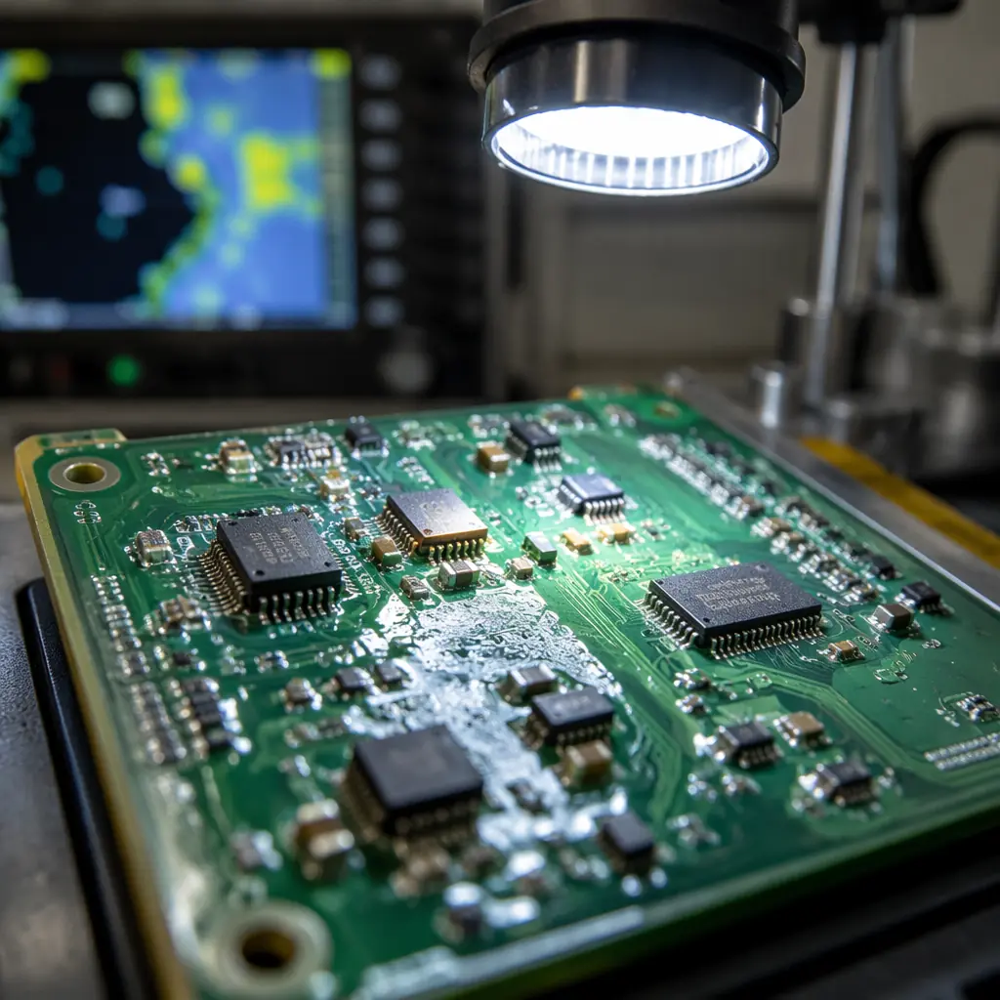
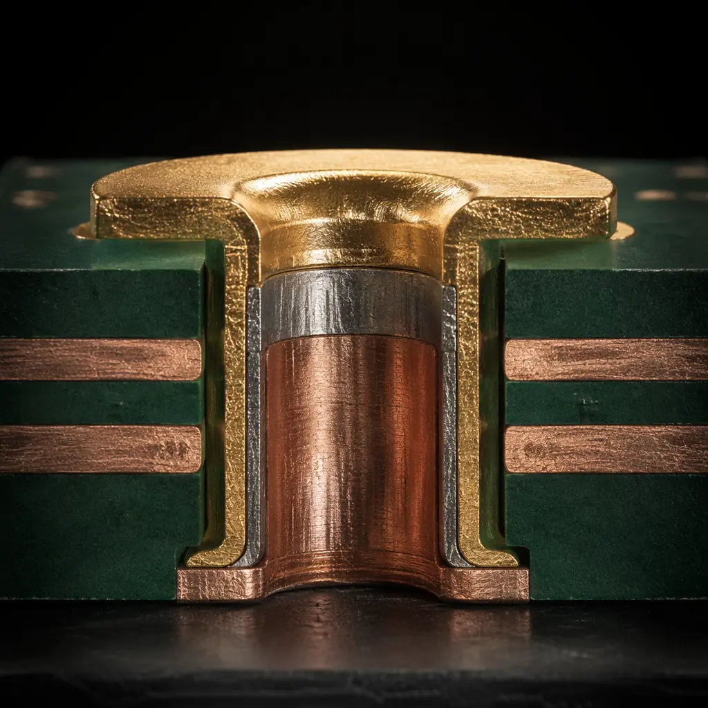
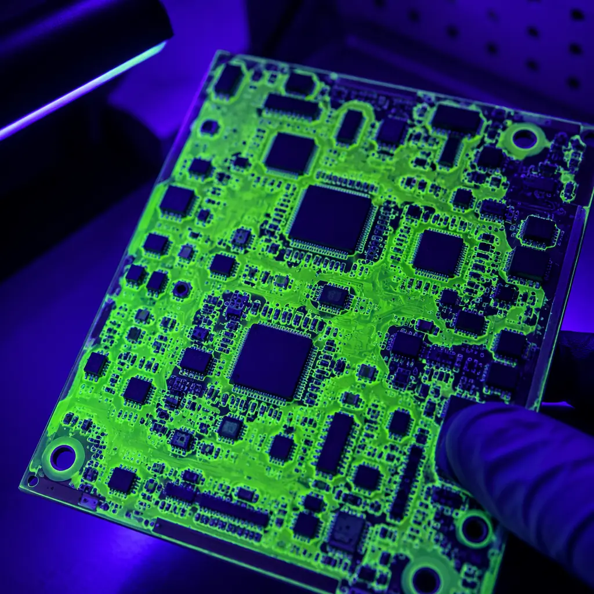
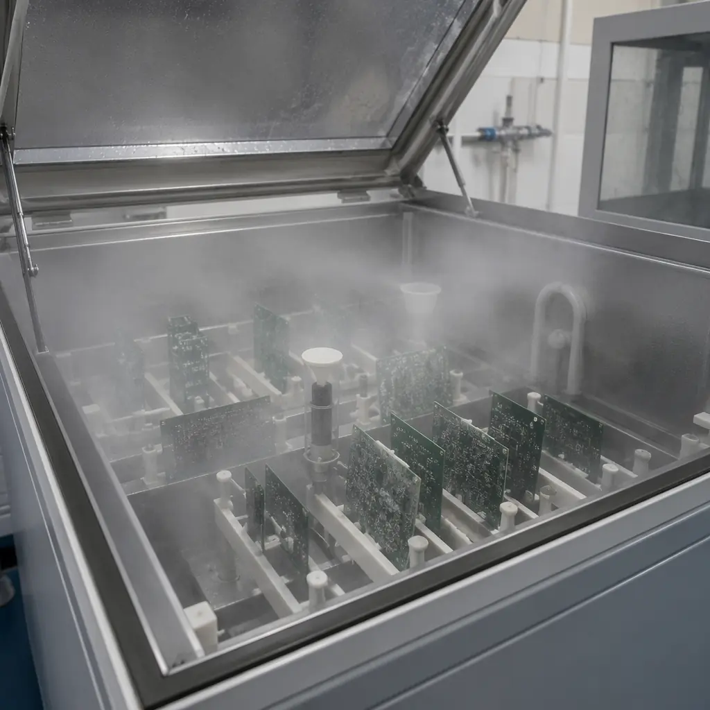

The global marine electronics market — navigation systems, radar, sonar, autopilot, engine control, communication, and subsea instrumentation — is worth over $6.5 billion annually. Every device in this market shares one enemy: salt. Standard PCB manufacturing, even to IPC Class 3, does not address the specific degradation mechanisms of a salt-laden, condensing-humidity, thermally-cycling marine environment. Marine-grade is not a marketing label. It is a manufacturing specification.

Why Saltwater Is Different — And Why Standard IPC Specs Don't Cover It
IPC-A-600 (Acceptability of Printed Boards) and IPC-6012 (Qualification and Performance Specification for Rigid Printed Boards) define three classes of PCB quality. Class 3 — the highest — is designed for "high-performance electronic products where continued performance is critical and downtime cannot be tolerated." It sounds like it should cover marine environments. It does not.
The gap between IPC Class 3 and marine-grade:
| Requirement | IPC Class 3 | Marine-Grade |
|---|---|---|
| Salt spray resistance | Not specified | ASTM B117, 96-500 hours minimum |
| Condensation / humidity cycling | Not explicitly required | IEC 60068-2-30, cyclic damp heat |
| Conformal coating | Optional / application-dependent | Mandatory — acrylic, silicone, or parylene |
| Surface finish corrosion resistance | Solderability only | ENIG or ENEPIG — nickel barrier required |
| Solder mask porosity | Not specified beyond visual | Low-porosity LPI, double-coat if needed |
The fundamental failure mechanism in marine electronics is electrochemical migration (ECM). Salt (NaCl) dissolved in condensed water creates a conductive electrolyte. Apply a DC bias between two adjacent copper traces — which is what every PCB does, constantly — and copper ions migrate from the anode, deposit as metallic dendrites at the cathode, and eventually create a short circuit. This can happen in under 400 hours on an unprotected FR-4 board in a salt-spray environment. The same mechanism, slowed by conformal coating and proper material selection, takes 5,000+ hours on a marine-grade board.
Material Selection: Laminates, Surface Finishes, and Solder Masks for Marine Environments
The marine-grade material stack starts with the laminate and works outward. Every layer of the PCB — substrate, copper, surface finish, solder mask, coating — contributes to saltwater resistance.
Laminate: Low Moisture Absorption Is Non-Negotiable
Standard FR-4 absorbs 0.1-0.2% moisture by weight under ambient conditions. Under marine humidity (95% RH, 35°C, continuous), that figure climbs toward 0.5-0.8%. Absorbed moisture increases the dielectric constant (Dk) — shifting impedance-controlled traces out of spec — and provides the medium for CAF (conductive anodic filament) growth between adjacent vias. Marine spec: laminate with moisture absorption ≤0.1% (IPC TM-650 2.6.2.1). Options: Shengyi S1000-2M (low-moisture FR-4, ~0.08%), Isola 370HR (~0.12%), or polyimide for extreme applications (0.2-0.3% but much higher TG). TG must be ≥170°C — the elevated operating temperature of enclosed marine electronics (engine rooms, unventilated bridge equipment) pushes laminate toward its glass transition faster than ambient air temperature suggests.
Surface Finish: The Nickel Barrier Is Your First Line of Defense
HASL has no corrosion resistance — the tin surface oxidizes, and once the tin oxide layer is breached (which salt accelerates), the underlying copper is exposed. Immersion silver tarnishes in sulfur-containing marine atmospheres (diesel exhaust, salt-laden air). Immersion tin suffers from whisker growth exacerbated by thermal cycling. The only surface finish appropriate for marine electronics is ENIG (electroless nickel immersion gold) or ENEPIG (electroless nickel electroless palladium immersion gold). The 3-5 µm nickel layer is the corrosion barrier. The 0.05-0.12 µm gold flash prevents the nickel from oxidizing before soldering. For edge connectors exposed to salt spray, hard gold (0.75-1.5 µm over 2.5-5 µm nickel) is required — soft ENIG gold wears through in under 100 mating cycles.
Solder Mask: Double-Coat Where Traces Are Dense
The solder mask is the second barrier after the surface finish. Standard LPI solder mask has microscopic pinholes — acceptable for indoor electronics, catastrophic for marine environments where salt-laden condensation penetrates these pinholes and reaches the copper underneath. Marine spec: low-porosity LPI solder mask (Taiyo PSR-4000 or equivalent), applied at 15-25µm thickness. For high-density areas (trace/space below 0.15mm), specify a double-coat — second pass of solder mask over the first — to eliminate pinhole paths. This adds roughly 5-8% to PCB cost and is the single most cost-effective reliability improvement in marine PCB manufacturing.

Conformal Coating and Encapsulation: The Multi-Layer Defense
If the surface finish is the first barrier and the solder mask is the second, conformal coating is the third — and for marine electronics, it is mandatory, not optional. The choice of coating material and application method directly determines service life.
| Coating Type | Moisture Barrier | Salt Spray (ASTM B117) | Reworkable? | Cost/Unit (100×160mm) |
|---|---|---|---|---|
| Acrylic (AR) | Good | 96-200 hrs | Yes (solvent strip) | $0.30-0.80 |
| Silicone (SR) | Excellent | 200-500 hrs | Difficult | $0.50-1.20 |
| Polyurethane (UR) | Excellent | 300-750 hrs | No (burn-through) | $0.80-1.50 |
| Parylene (XY) | Near-perfect | 750-1,500 hrs | No (mechanical removal) | $3.00-8.00 |
Application quality matters as much as material choice. Conformal coating fails most often at edges, connector interfaces, and test points — anywhere the coating is thinner or absent. Inspection requirement: UV tracer in the coating formulation + UV light inspection after application. Any dark (non-fluorescing) spot is a coating void — reject the board. For critical marine electronics, specify IPC-CC-830 Class B coating qualification as a manufacturing requirement.

Connector and Interface Protection for Deck-Level and Subsea Electronics
The most common failure point in marine electronics is not the PCB — it is the connector. Salt-laden moisture wicks into connector housings, corrodes contacts, and creates intermittent opens. The PCB design must anticipate this and provide protection at the board-connector interface.
Use Sealed Connectors — IP67 Minimum for Deck, IP68 for Subsea
Standard pin headers and ribbon cable connectors have no sealing whatsoever. Marine-grade connectors (M8/M12 circular, Deutsch DT series, or SubConn for subsea) have O-ring seals on the mating face and potting wells on the rear. PCB rule: specify connectors with rear potting capability. After soldering the connector to the board, fill the rear potting well with two-part epoxy or silicone — this prevents moisture from entering through the solder side of the connector.
Gold-Plated Contacts Only — And Specify the Thickness
Tin-plated connector contacts form a galvanic cell with gold-plated PCB pads in the presence of saltwater electrolyte, accelerating corrosion of the tin side. Rule: connector contacts and PCB pads must use the same noble metal — gold on both sides. Specify 0.75µm minimum gold on connector contacts (30µ" selective gold) and match with ENIG (0.05-0.12µm Au, which is sufficient because the nickel underneath is the primary barrier). For connectors subject to >500 mating cycles, specify 1.25µm (50µ") hard gold.
Conformal Coating at the Connector Boundary
Coating must extend to the connector body but must not enter the contact area — coating on the contact surface interferes with electrical connection. Manufacturing rule: mask connector contact areas during coating application (silicone boot, Kapton tape, or peelable solder mask). After coating, inspect the coating-connector interface at 10× magnification. Any gap between the coating and the connector body is a moisture ingress path — reject.
Testing Standards: Salt Spray, Thermal Shock, and Beyond
Marine electronics testing is not optional and cannot be simulated with a multimeter on a lab bench. The following test sequence is the minimum for qualifying a marine-grade PCB design:
ASTM B117 — Salt Spray (Fog) Testing
5% NaCl solution, 35°C, continuous spray. Duration: 96 hours for protected (below-deck) equipment, 200-500 hours for deck-level equipment, 500-1,000 hours for subsea or exposed installations. Pass criterion: no visible corrosion on any exposed metal surface; insulation resistance between adjacent traces must remain above 100 MΩ (measured at 100V DC after 24-hour recovery). A standard IPC Class 3 board without conformal coating will fail salt spray in under 100 hours with visible copper corrosion. A properly specified marine-grade board will show no corrosion at 500 hours.
IEC 60068-2-30 — Damp Heat, Cyclic
Cycles between 25°C and 55°C at 95-100% RH, with condensation occurring during the ramp-up phase. This is more aggressive than steady-state 85/85 because the condensation phase creates a liquid water film on the board surface — exactly what happens in marine electronics every morning as the air warms faster than the equipment. Duration: 10 cycles minimum (each cycle = 24 hours). Pass criterion: insulation resistance >10 MΩ at the end of each wet phase.
IEC 60068-2-14 — Thermal Shock
-40°C to +85°C, <30 second transition, 100 cycles minimum. Why this matters for marine: a navigation display on a fishing vessel in Norway goes from -20°C (night, powered off) to +60°C (direct sun through wheelhouse window, powered on) in under an hour. The CTE mismatch stress from this cycle is what eventually cracks solder joints and delaminates conformal coating. Pass criterion: no solder joint cracks, no coating delamination, no change in electrical continuity.

Cost vs. Reliability: The Marine Electronics Trade-off Matrix
Marine-grade manufacturing adds cost — but the cost of a field failure at sea dwarfs the manufacturing premium. Here is the trade-off in real numbers for a typical 4-layer, 100 × 160mm PCB:
| Specification Tier | Unit Cost (1,000 pcs) | Salt Spray Life | Appropriate For |
|---|---|---|---|
| Standard (IPC Class 2, HASL, no coating) | $2.80 | <100 hrs | Indoor only — not suitable for marine |
| IPC Class 3, ENIG, acrylic coating | $4.50 | 200-400 hrs | Below-deck, ventilated spaces |
| Marine baseline: TG 170, ENIG, double-coat mask, polyurethane coating | $6.20 | 750-1,000 hrs | Deck-level, bridge equipment |
| Marine extreme: polyimide, ENEPIG, parylene C, sealed connectors | $14.00 | 1,500+ hrs | Subsea, bilge, continuous immersion |
The jump from $2.80 to $6.20 is a 121% cost increase. But the alternative is a $2.80 board that corrodes in 3 months on a $15,000 marine radar system — requiring a service call that costs $500-2,000 in labor alone, plus downtime, plus reputational damage. Marine-grade PCB manufacturing is the cheapest insurance policy in the marine electronics industry.
At Huaxing PCBA, we manufacture marine-grade PCBs to these specifications — TG 170+ laminates, ENIG/ENEPIG surface finish, low-porosity solder mask with double-coat option, polyurethane or silicone conformal coating with UV inspection, and full salt spray / thermal shock testing per ASTM and IEC standards. If your marine electronics are failing in the field, the PCB is the place to start the investigation — not the enclosure, not the software, not the installation. The board that lives inside the sealed box is usually the component that failed first.